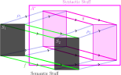

Computation in a Nutshell
Computer Science is one of those rare fields of study \(X\) where the question "what is \(X\)?" actually has a pretty satisfying answer. We asked this exact question, where \(X = \) computation, in the first section of the course, but we weren't really ready for that satisfying answer. Now we are (kind of)!
...ehhhh ok, maybe we weren't quite ready for this yet. Today we are going to take the first couple of steps to understanding the bolded statement above, and talk about what "semantical objects" are and what "syntax" is.
Syntax and Semantics
"Syntax" is a word that comes from linguistics. In that context (and in the context of programming languages, too), the syntax of a language consists of the strings of text that are "well-formed". In linguistics, "well-formed" might mean "grammatical", and similarly in a programming language it might mean that there are no syntax errors (you haven't forgotten a bracket or a colon or something). Abstractly, for us, syntax really just refers to strings of text, or words as we have been calling them.
Part of the point of syntax is that it is completely devoid of meaning. It's just text! The very nature of computation demands that when we get a machine to compute something, it should never need to understand what it is doing. Because it's not going to. It's a machine, after all. It should be able to get its job done by just pushing symbols around.
Automata are a good examples of "machines that just push text around". Expanding our definition of "syntax" slightly, running an automaton just involves placing and removing "active" markers (see Reading Words) according to some set rules. It is in this sense that automata calculate.
But computation wouldn't amount to much if it was just text being pushed around. To us, the observer, each bit of syntax means something. The meaning we ascribe to a string of text, i.e., our interpretation of it, is its semantics. That type of thing that you interpret the text to mean is what is being referred to as a "semantical object".
Semantical objects can be as simple and finite, or as complex and infinite, as you want. For a concrete example, consider the regular expression \((a + ((b \cdot c))^*)\). Before you knew what all the symbols meant, it was just a string of text, nothing more, and isn't even that long a string of text (21 characters). But how we interpret that string of text, i.e., its semantics, is as a language: it represents the language \[ \mathcal L((a + ((b \cdot c))^*)) = \{a(bc)^n \mid n \in \mathbb N\} \] That's not finite at all! Somehow, we were able to capture this entire language with just 21 characters.
This is where computation gets its power from: text is easy to work with in comparison to infinite sets of numbers, words, etc.! But the simplicity of text also places a limit on what computation can and cannot accomplish. In this chapter of the course, on computability, we are going to prove, mathematically, that there is an upper bound on what computation can achieve. In fact, we will see a whole host of problems that cannot be solved computationally.
Mathematical proof requires rigour, so let's get started on that. We are going to start by taking a look at representation, which is the process of taking something and turning it into syntax. The opposite direction, turning a piece of syntax back into its semantics, is called interpretation.
Representations of Decision Problems
The problems we have learned to solve with the models of computation we have seen so far in the course have only dealt with deciding language membership, i.e., deciding if a word is an element of a given language. This is not so dramatic a restriction: in fact, just about any decision problem (deciding between "yes" or "no") can be translated into a language membership decision problem (deciding whether a word is in a language or not). This fact is essential to modern computing. In your computer, every piece of information that is stored is represented as a bitstring, i.e., a word \(w \in \{0,1\}^*\). Therefore, every decision problem that can be solved with a computer program must boil down to a decision problem in bitstrings! Let us make all of this more general and more precise.
- for any \(s \in S\), \(\rho(s) \in L\) if and only if \(s \in S\), and
- \(\rho\) is injective.
In a diagram,

Another classic string representations of natural numbers is one we use one all the time! \[\begin{gathered} \mathsf{dec} \colon \mathbb N \to \{0,1,2,3,4,5,6,7,8,9\}^* \\ \mathsf{dec}(n) = \text{(the shortest decimal expansion of \(n\))} \end{gathered}\] Note that the word "shortest" means that \(\mathsf{dec}(n)\) only starts with a \(0\) if \(n = 0\). There are analogous representations for binary, hexadecimal, and so on.
- \(D_1 = \{n \in \mathbb N \mid n > 0\}\)
- \(D_2 = E = \{n \in \mathbb N \mid \text{\(n\) is even}\}\)
- \(D_3 = \{2^n \mid n \in \mathbb N\}\)
- \(D_4 = \{2^n + 1 \mid n \in \mathbb N\}\)
The definition of faithful representation is very general: it allows us to extend our definitions of "regular" and "context-free" to other types of decision problems.
For example, we saw that \(D_1,D_2,D_3,D_4\), and \(D_5\) above are all regular problems (in the sense that they are in \(\mathsf{Reg}\)).
In the previous exercises (and problem), you found faithful representations of a handful of number-theoretic problems. Other types of objects have string representations though. Sometimes these take a bit more work and ingenuity.
We are not quite ready to get into what exactly a solution to a decision problem is yet. For now, we are going to let ourselves be content with the idea that a solution to a decision problem \(D\) is a faithful representation \((f, L)\) of \(D\) and a finite automaton (of some kind, maybe with a stack or a counter!) \(\mathcal A\) with a state \(x\) such that \(L = \mathcal L(\mathcal A, x)\). We will be more precise about this later.
Representations of Problems Generally
So we've talked about decision problems a lot. But not every computational problem is a decision problem. For example, given \(n \in \mathbb N\), how does one compute \(n^2\)? This is not so much a decision problem as it is a finding-a-function problem. These more general types of problems are also going to be useful for us to understand from a computational perspective, so we should spend some time with them here.
In a diagram, 
This lecture was all about what it means to represent everyday computational problems in the format of strings, which is what all of our models of computation so far have operated on. Furthermore, the models of computation we have been working with up until now were really only able to decide. What we are missing are models of computation that can do what functions do: take input and produce output. In the next lecture, we will look at a simple format of computable functions, which are functions of the form \(g \colon A^* \to A^*\) (like in the definition of function representations) that are defined "via syntactic means".